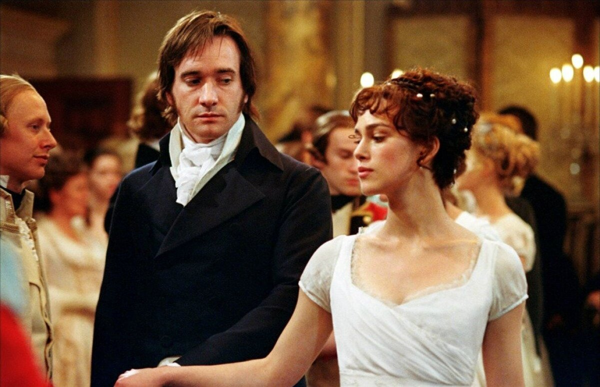
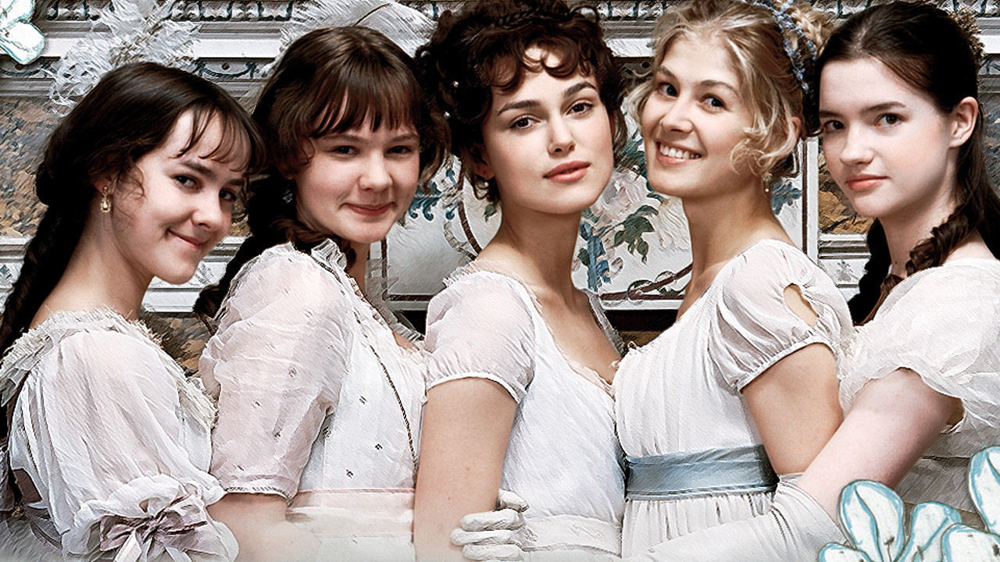

Pride and Prejudice is an 1813 novel of manners by Jane Austen. The novel follows the character development of Elizabeth Bennet, the dynamic protagonist of the book who learns about the repercussions of hasty judgments and comes to appreciate the difference between superficial goodness and actual goodness. 
Mr. Bennet, owner of the Longbourn estate in Hertfordshire, has five daughters, but his property is entailed and can only be passed to a male heir. His wife also lacks an inheritance, so his family faces becoming poor upon his death. Thus, it is imperative that at least one of the daughters marries well to support the others, which is a motivation that drives the plot.
Pride and Prejudice has consistently appeared near the top of lists of "most-loved books" among literary scholars and the reading public. It has become one of the most popular novels in English literature, with over 20 million copies sold, and has inspired many derivatives in modern literature. For more than a century, dramatic adaptations, reprints, unofficial sequels, films, and TV versions of Pride and Prejudice have portrayed the memorable characters and themes of the novel, reaching mass audiences.

Pride and Prejudice, like most of Austen's works, employs the narrative technique of free indirect speech, which has been defined as "the free representation of a character's speech, by which one means, not words actually spoken by a character, but the words that typify the character's thoughts, or the way the character would think or speak, if she thought or spoke".
Contacts:
Our telephone
Our Gmail